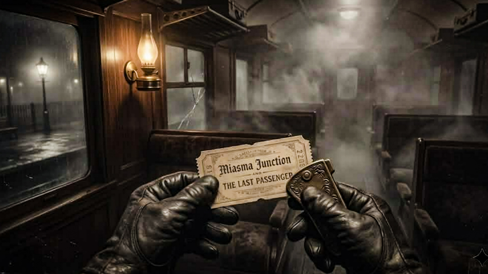
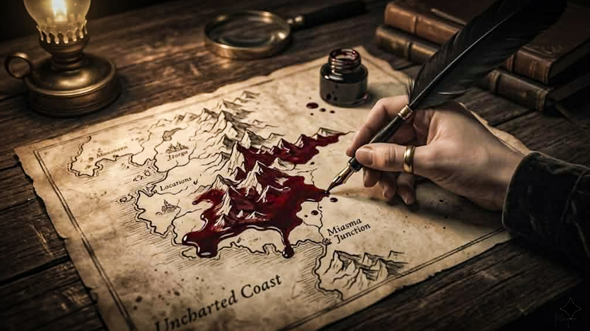
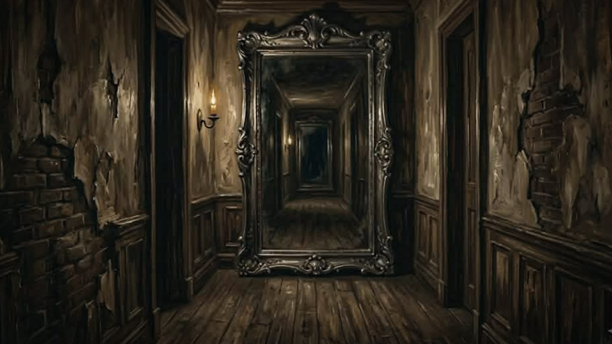
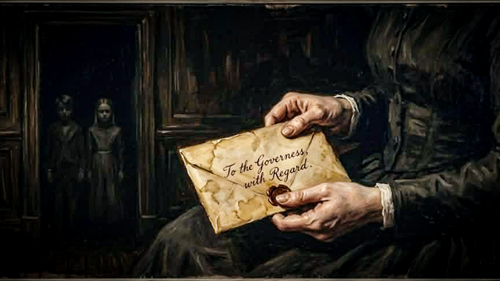
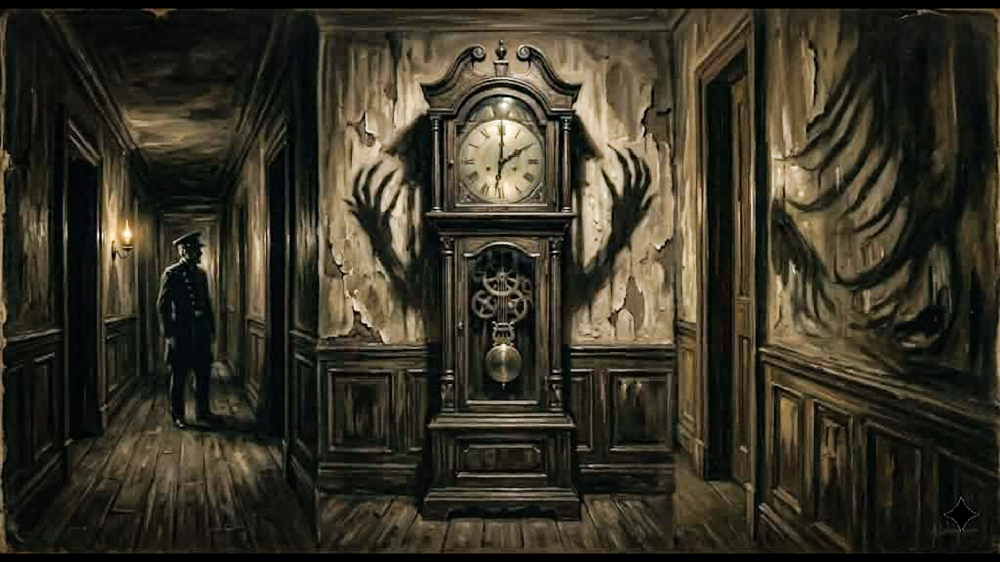

THE THIRTEENTH KNOCK
Every evening, Mrs. Hartwell would make her rounds — the parlour door, the cellar hatch, the servants' entrance, and finally the great oak door...
Open the Door to Today's StoryEvery evening, Mrs. Hartwell would make her rounds — the parlour door, the cellar hatch, the servants' entrance, and finally the great oak door...
Open the Door to Today's Story
She had always been meticulous about locks.
Every evening, Mrs. Hartwell would make her rounds — the parlour door, the cellar hatch, the servants' entrance, and finally the great oak door at the front of the house. Twelve locks. Twelve turns of the key. She counted them aloud, a ritual as old as her tenure in the Ashford estate.
On the night of the twenty-third, she heard knocking.
One. Two. Three. She set down her candle and listened, certain it was the wind pressing against the shutters. Four. Five. Six. The knocks were deliberate, unhurried, as if the caller had all the time in the world. Seven. Eight. Nine. She rose from her chair, her joints protesting the cold. Ten. Eleven. Twelve.
She opened the door.
The fog lay thick across the moor. The gas lamp at the gate burned low, its light swallowed before it reached the path. There was no carriage, no figure, no footprint in the frost.
She was about to close the door when she heard it.
The thirteenth knock.It came from behind her.
From inside the house.
She turned slowly, holding the candle before her like a word against whatever waited in the dark. The hallway was empty. The portraits on the wall — the Ashfords going back six generations — stared forward with their painted eyes.
All except one.
The portrait of Edmund Ashford, dead these forty years, had turned its gaze toward the cellar door.
Mrs. Hartwell had not noticed, until that moment, that the cellar hatch was open.

The 11:47 from Paddington ran on time, as it always did.
Conductor Aldous Pryce had worked the line for nineteen years. He knew every regular — the solicitor who slept through Slough, the widow who knitted past Reading, the young clerk who always sat in carriage four and never looked up from his ledger.
That Tuesday, he counted sixteen passengers at the platform. He noted it in his book, as regulations required, and walked the length of the train before the whistle blew.
At Maidenhead: sixteen. At Twyford: sixteen. At Reading: sixteen.
He paused at Reading longer than usual. Something nagged at him — a feeling he could not name, like a word on the tip of the tongue. He walked the carriages again, counting faces in the lamplight.
Sixteen.He returned to his post. The train moved on.
At Didcot, he counted again.
Seventeen.
He went through each carriage methodically, matching faces to his memory of the platform. The solicitor. The widow. The clerk. Fourteen others he could account for.
The seventeenth sat in carriage six, which had been empty at Paddington. He was a tall man in a black coat, his hat pulled low, his face turned toward the window. The glass showed only darkness and the reflection of the carriage lamp.
It did not show his reflection.
Pryce stood in the doorway of carriage six for a long moment.
The man in the black coat turned, very slowly, and looked at him.
Pryce walked back to his post and did not count again for the remainder of the journey.
He resigned the following morning. He never explained why.

My husband was a man of extraordinary precision.
He had mapped the jungles of Borneo, the river systems of the Congo, the mountain passes of the Hindu Kush. When we married and took the house on Cavendish Square, he mapped that too — every room, every corridor, every alcove and stairwell, rendered in his meticulous hand on a single sheet of cartographic paper.
He disappeared on a Thursday in November.
I did not discover the map until spring, when I was sorting through his study. It was tucked inside the cover of his field journal, folded into quarters, the paper worn soft at the creases.
I spread it on his desk and traced the familiar rooms with my finger. The parlour. The dining room. The library where I now stood. The bedrooms above. The kitchen and scullery below.
A room that should not exist.And then, in the northeast corner of the house, between the linen cupboard and the exterior wall — a room.
A room I had never entered. A room I had never noticed. A room that, by my reckoning, should not exist, for the exterior wall of the house was flush with the street, and there was no space for what the map described.
I went to the northeast corner of the house.
I pressed my hand against the wall beside the linen cupboard.
The wall was warm.
And from somewhere beyond it, very faintly, I heard the scratch of a pen on paper.
My husband had always worked late into the night.
I have not yet decided whether to knock.

The estate agent had mentioned it as a selling point.
"All the houses in the terrace have them," he said cheerfully, gesturing toward the long corridor that ran the length of the ground floor. "A mirror at the end. Gives the illusion of depth. Very fashionable in the sixties."
The mirror was tall, framed in black lacquered wood, its glass slightly foxed with age. In daylight, it reflected the hallway faithfully — the coat stand, the umbrella rack, the pattern of the runner.
At night, it reflected something else.
I noticed it first on the third evening after we moved in. I had risen for a glass of water and passed the hallway in the dark. The mirror, catching the faint light from the street lamp outside, showed the corridor behind me.
It was not moving as I moved.There was someone standing at the far end.
I turned. The corridor was empty.
I looked back at the mirror. The figure was closer now.
I am not a man given to fancy. I am a solicitor. I deal in facts and documents and the precise language of the law. I stood in my nightshirt in the dark hallway of my new house and applied reason to what I saw.
The figure in the mirror was wearing my nightshirt.
It was standing where I was standing.
But it was not moving as I moved.
I raised my right hand. The figure raised its left.
I took a step forward. The figure took a step forward.
I turned and walked very quickly back to the bedroom and did not look at the mirror again.
I have since had it removed.
The house feels smaller now. And the wall where the mirror hung is always cold.

Miss Eleanor Vane had been dead for thirty-one years when her letter arrived.
I know this because I found her grave in the churchyard on my second Sunday in the village — a modest stone, the inscription worn but legible: Eleanor Vane, Governess, 1821–1854, Faithful in Service. I had been curious about my predecessor, as one is when one inherits a post that has stood vacant for so long.
The letter came on a Wednesday.
It was addressed, in a hand I did not recognise, to Miss E. Vane, Governess, Thornfield Lodge. The postmark was smudged beyond reading. The paper was of a quality no longer manufactured.
I opened it, as the current occupant of the position, feeling I had some claim to its contents.
Dear Eleanor,
I have thought carefully about what you told me, and I believe you. The children are not what they appear. You must leave before the equinox. I know you think your duty binds you to the house, but there are duties that supersede employment, and the preservation of one's soul is among them.
Come to me in London. Come at once.
Your loving sister, M.
"That letter isn't for you."I set the letter down on the schoolroom table.
The two children in my charge — Thomas, aged nine, and Clara, aged seven — sat at their lessons with their heads bent over their books.
Thomas looked up.
"That letter isn't for you," he said pleasantly.
Clara did not look up. But she was smiling.

The Whitmore Mill employed a night watchman for insurance purposes.
Silas Croft had held the position for eleven years without incident. He made his rounds on the hour — the loading dock, the engine room, the upper floor where the looms stood silent in the dark, the foreman's office, and back to his post by the gate. He carried a lantern and a logbook, and he noted the time at each station with the diligence of a man who understood that his employment depended on it.
On the night of the fourteenth of March, he completed his third round at half past two and settled into his chair by the gate.
At three o'clock, he rose for his fourth round.
He had not gone ten paces when he stopped.
The floor of the loading dock was dusty — it always was, despite the sweepers' best efforts. In the light of his lantern, he could see his own footprints from the previous rounds, a clear trail leading from the gate to the dock and back.
A fourth set of prints.He could also see a fourth set of prints.
They followed his route exactly — the same stride, the same weight, the same slight drag of the left heel that Silas had developed after his accident in '79.
But they ran in the opposite direction.
Silas stood very still and listened to the mill.
The looms were silent. The engine was cold. There was no sound but the wind against the high windows and the distant toll of the church clock marking three.
He completed his round.
He found nothing.
He found no one.
He never looked at his own footprints again.
This repository is dedicated to horror fiction that lingers. We specialize in the atmospheric, the unsettling, and the things that breathe just outside the light.
Every entry is a piece of a larger puzzle. This is the official archive for Miasma Inoculus.